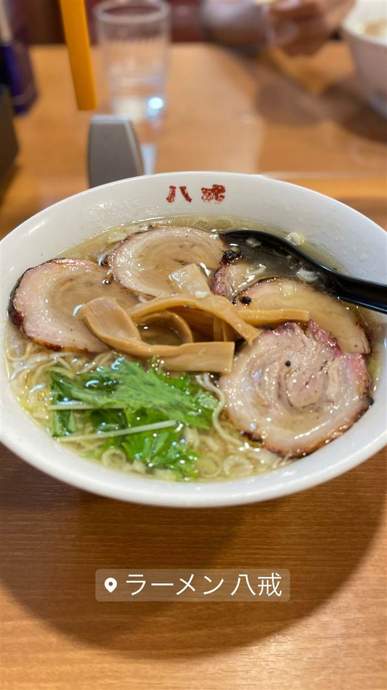
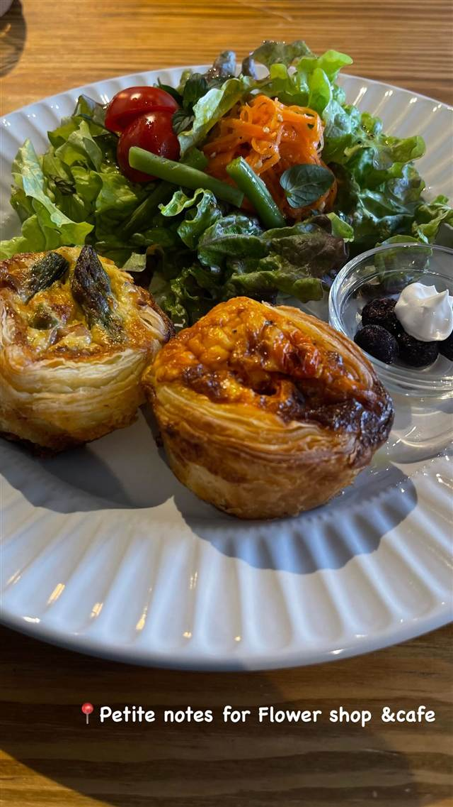
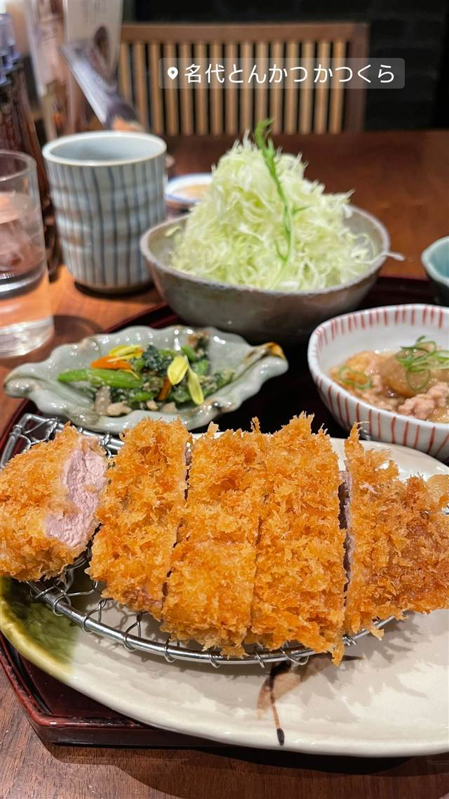
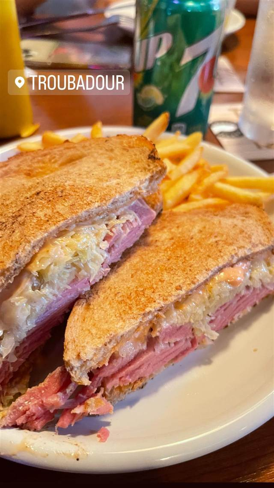
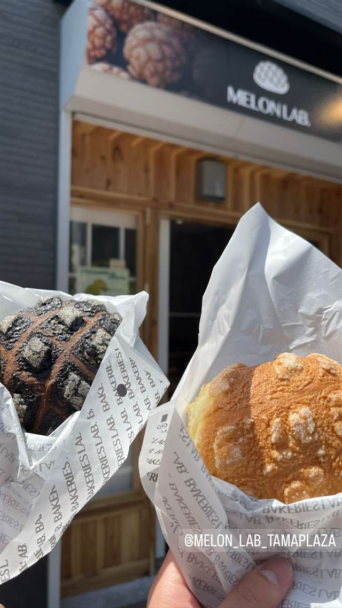

八戒（ハッカイ）
バスで向かう住宅街に佇む、優しい味のサンマー麺
ラーメン八戒
たまプラーザ駅からバスで向かう住宅街にひっそりと佇む町中華。昔ながらの優しい味の中華そばやサンマー麺が地元で親しまれている。
REVIEWS
世間の評判
3.38食べログ
爆速提供とこだわりチャーシュー
- 注文から2分ほどで出てくることもある爆速の提供を評価する声が多い
- 肩ロースを使ったこだわりのチャーシューが美味しいという声が多い
- 地元の定番であるサンマー麺を何度も食べたくなるという声がある
- ラーメンの種類が15種近くあってメニューを決めづらいという声もある
食べログ 口コミ153件
| 看板 | サンマー麺、中華そば、生姜焼き定食 |
|---|---|
| こだわり | 細麺にたっぷり野菜をのせたサンマー麺など、昔ながらの優しい味わい。 |
| どこから | 東京から1時間ほど |
| 予算 | 昼 ¥1,000～¥1,999 夜 ¥1,000～¥1,999 |
| 定休日 | 火曜日 |
| 場所 | たまプラーザ 神奈川県横浜市青葉区美しが丘西3-2-4 |
| メモ | 駅から離れた住宅街にあり、たまプラーザ駅からバス便利用が便利。駐車場完備。ランチタイムは行列ができることもある。 |
食べたもの：ラーメン / ラーメン定食
NEARBY
近い店・同じ系統の店
-
 パスタ たまプラーザ
ItalianLodge TEN（イタリアンロッジ テン）
山小屋風の隠れ家で味わう揚げナスのせ自家製ミートソースパスタ
昼 ¥1,000～¥1,999 夜 ¥4,000～¥4,999
パスタ たまプラーザ
ItalianLodge TEN（イタリアンロッジ テン）
山小屋風の隠れ家で味わう揚げナスのせ自家製ミートソースパスタ
昼 ¥1,000～¥1,999 夜 ¥4,000～¥4,999
-
 ハワイ たまプラーザ
メレンゲ たまプラーザ店（Merengue）
メレンゲ使用のふわふわパンケーキとロコモコが名物のハワイアン
昼 ¥1,000～¥1,999 夜 ¥1,000～¥1,999
ハワイ たまプラーザ
メレンゲ たまプラーザ店（Merengue）
メレンゲ使用のふわふわパンケーキとロコモコが名物のハワイアン
昼 ¥1,000～¥1,999 夜 ¥1,000～¥1,999
-

サラダ たまプラーザ駅 Petite Notes（プティットノット） 花屋併設のアンティーク調カフェで味わうキッシュとサラダ 昼 ¥1,000～¥1,999 夜 ¥1,000～¥1,999 -

とんかつ たまプラーザ 名代とんかつ かつくら 東急百貨店たまプラーザ店 ご飯もキャベツも味噌汁もおかわり自由、京都発のとんかつ 昼 ～¥1,999 夜 ¥2,000～¥2,999 -

バー たまプラーザ Troubadour（トルバドール） 1970年代LAの伝説的音楽クラブを再現した内装でルーベンサンド 昼 ¥1,000～¥1,999 夜 ¥4,000～¥4,999 -

ベーカリー たまプラーザ MELON LAB. たまプラ店 千葉・野田市発、全国70店以上に広がったメロンパン専門店 昼 ～¥999 夜 ～¥999